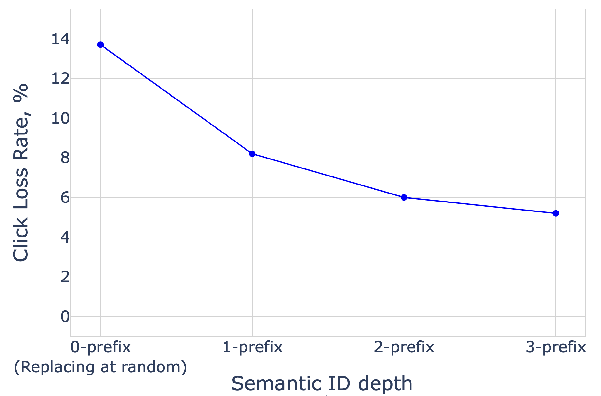

Enhancing Embedding Representation Stability in Recommendation Systems with Semantic ID
Подробное саммари статьи:
Авторы: Carolina Zheng, Minhui Huang, Dmitrii Pedchenko, Kaushik Rangadurai, Siyu Wang, Gaby Nahum, Jie Lei, Yang Yang, Tao Liu, Zutian Luo, Xiaohan Wei, Dinesh Ramasamy, Jiyan Yang, Yiping Han, Lin Yang, Hangjun Xu, Rong Jin, Shuang Yang.
Аффилиации: Columbia University; AI at Meta.
1. Коротко: о чем статья
Это production-oriented работа Meta про Semantic ID не как generative retrieval identifier, а как более стабильную замену random hashing для sparse features в ads ranking. Главная проблема: raw item IDs в крупной рекламной системе имеют огромную cardinality, сильный skew и быстро меняются. Hashing экономит память, но создает случайные коллизии и нестабильные embedding rows.
Авторы предлагают Semantic ID prefix ngram - parameterization, где item получает hierarchical RQ-VAE semantic ID, а embedding table использует префиксы и n-grams этих кодов. Коллизии становятся не случайными, а семантически осмысленными: похожие объявления могут делить часть параметров.
2. Какие проблемы решаются
- Item cardinality. Каталог больше допустимой embedding table, поэтому неизбежны collisions.
- Impression skew. Небольшая доля head items получает большую часть показов, tail items почти не обучаются.
- ID drifting. Старые объявления быстро исчезают, новые появляются каждый день, и embedding row меняет смысл.
- Random hash pollution. Несвязанные items делят одну строку таблицы и дают противоречивые gradient updates.
3. Как строится Semantic ID
В основе - RQ-VAE поверх content embeddings объявлений. Item получает последовательность cluster codes, например несколько уровней от coarse к fine. В отличие от raw ID, такой код должен быть стабильнее во времени: новое объявление с похожим content попадет в близкий semantic prefix и сможет использовать уже обученные параметры.

4. Prefix-ngram parameterization
Обычный Semantic ID можно маппить в embedding table по-разному: целиком, по префиксам, по отдельным токенам или n-grams. Авторы показывают, что prefix-ngram лучше использует иерархическую структуру. Чем больше глубина prefix-ngram и cardinality RQ-VAE, тем лучше normalized entropy в offline experiments.
Интуиция простая: если items разделяют coarse prefix, модель может transfer learning между ними; если нужно fine distinction, используются более длинные n-grams.
5. Почему это работает для skew и drift
В Meta ads top 0.1% items дают около 25% impressions, следующие 5.5% - еще 50%, а 94.4% tail items дают оставшиеся 25%. Random hashing плохо помогает tail: tail item делит строку с произвольными neighbors. Semantic ID делает sharing осмысленным: tail item может делить prefix с head или torso item той же семантики.
При ID drift логика похожая. Если старое объявление исчезло, а новое рекламирует похожий продукт, raw ID полностью новый, но semantic prefix может совпасть или быть близким. Это снижает representation shift.
6. Production serving

Production pipeline разделяет тяжелую часть и serving. RQ-VAE обучается offline на content embeddings за несколько месяцев. На этапе создания объявления content understanding model производит embedding, RQ-VAE считает Semantic ID, значение сохраняется в Entity Data Store. На serving-запросах raw ID и user history обогащаются semantic features и передаются в ranking model.
7. Результаты
Авторы сообщают, что Semantic ID prefix-ngram улучшает offline ranking metrics относительно random hashing и original Semantic ID parameterization. В production Semantic ID features работают в Meta Ads Recommendation System больше года и входят в число top sparse features по feature importance.
Для flagship ads ranking model авторы создали шесть sparse и одну sequential feature из text, image и video content embeddings. По их отчету, Semantic ID features дали около 0.15% gain на top-line online metric. Для такой оптимизированной ads-системы это существенный production-сигнал.

8. Сильные стороны
- Работа фокусируется на stability, skew и drift, а не только на offline Recall.
- Есть описание productionization: offline RQ-VAE, Entity Data Store, feature generation, ranking serving.
- Semantic ID используется как drop-in sparse feature, без полного перехода на generative retrieval.
- Prefix-ngram parameterization хорошо объясняет, как превратить hierarchy в embedding-table sharing.
9. Ограничения
- Большая часть метрик и данных internal, поэтому воспроизводимость ограничена.
- Работа не решает constrained decoding или item generation; это ranking/use-as-feature сценарий.
- Semantic ID зависит от качества content embeddings и периодичности offline RQ-VAE retraining.
- Нужно внимательно версионировать Semantic ID, иначе feature drift переедет из raw ID space в semantic ID space.
10. Вывод
Эта статья полезна как production counterpart к TIGER/CoST/LETTER. Она показывает, что Semantic ID ценен не только как output token для generative recommender, но и как стабильная sparse representation для ranking models. Главный урок: хорошие коллизии лучше случайных коллизий, если они отражают content semantics и помогают переносить знание между head, torso и tail items.